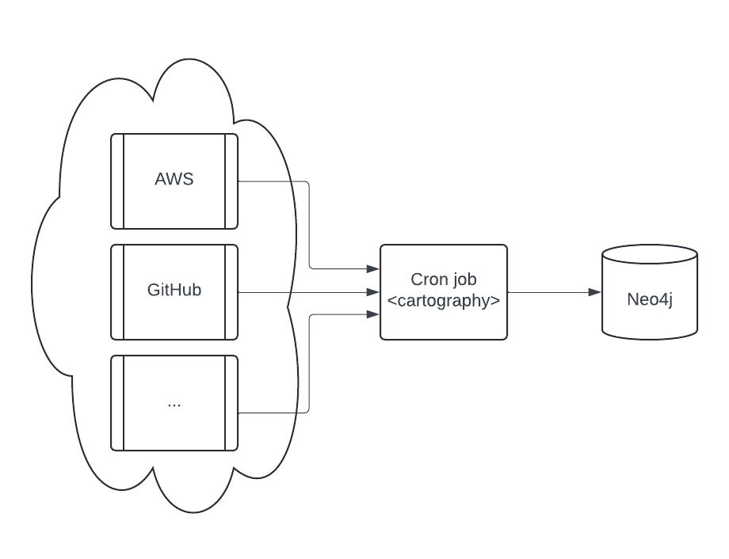
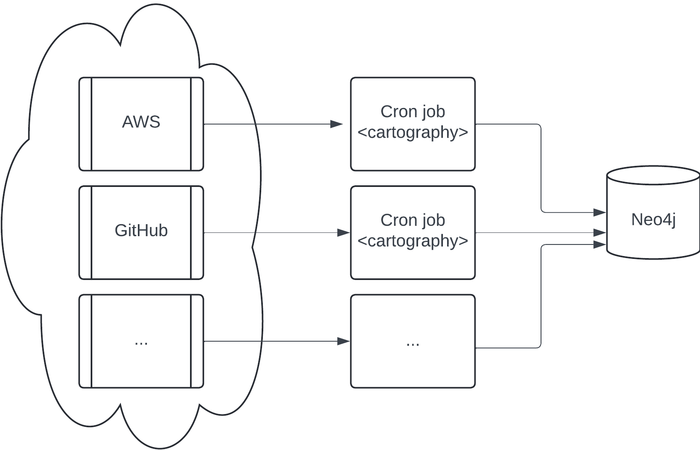

Cartography Production Operations#
This document contains tips for running Cartography in production.
Deployments#
Simple#
The simplest production deployment involving Cartography looks something like this:

Configure a Neo4j database. Specifics on this are out of scope of this document; refer to Neo4j’s resources on how to do this.
Configure a scheduled task (e.g. a cron job) to be able to access one or more data providers. See the modules section for specifics on each. We recommend that you run the cron job on a separate machine from the Neo4j database.
Parallel jobs#
If a single Cartography job takes longer than you would like, an orchestrator can split ingestion into jobs that sync different resource families.

Cartography does not provide a distributed lock for concurrent syncs. Never run the same resource type for the same account, project, or tenant concurrently. Its cleanup can treat data written by the other job as stale and delete it.
The diagram shows AWS and GitHub in separate jobs because their node schemas and cleanup scopes are independent. More granular parallelism is an advanced deployment pattern, not a general guarantee. Before splitting one provider, verify that the jobs do not manage the same nodes, relationships, sub-resource cleanup scope, or analysis output.
Each process creates its own update tag. Keep each job’s ingestion and cleanup under that same tag, and do not pass one job’s tag into another independently scheduled run. Run cross-resource analysis only after all of its required ingestion jobs complete.
Maintaining a up-to-date picture of your infrastructure#
Running cartography ensures that your Neo4j instance contains the most recent snapshot of your infrastructure. Here’s
how that process works.
Cleanup jobs#
Each node and relationship created or updated during the sync will have their lastupdated field set to the
update_tag. At the end of a sync run, nodes and relationships with out-of-date lastupdated fields are considered
stale and will be deleted via a cleanup job.
Sync frequency#
To keep data updated, you can run cartography as part of a periodic script (cronjobs in Linux, scheduled tasks in
Windows). Determine your needs for data freshness and adjust accordingly.
Performance#
Faster Neo4j driver#
Neo4j publishes neo4j-rust-ext, a Rust implementation of the Bolt protocol codec used by the Python driver. Because a Cartography sync spends a lot of its time serializing large batches of nodes and relationships over Bolt, this is one of the cheapest wins available: measured sync speedups are in the 20-30% range, and Neo4j reports up to 10x on workloads dominated by driver overhead.
Install it through the neo4j-rust extra:
uv tool install 'cartography[neo4j-rust]'
or, with pip:
pip install 'cartography[neo4j-rust]'
Nothing else changes: the extension registers itself where the Neo4j driver looks for it, so there is no flag to set and no code path specific to it. Cartography logs which codec it picked up at the start of every sync:
Using the Rust Bolt codec from neo4j-rust-ext.
Pre-built wheels cover Linux, macOS and Windows on x86-64 and arm64. On a platform with no matching wheel, pip falls
back to building from source, which needs a Rust toolchain; installing plain cartography avoids that entirely.
If you hit a driver-level bug, reinstall without the extra before reporting it, so the pure-Python codec can confirm the behavior.
The published Docker image already installs the extra, so containers get the Rust codec with no action on your part.
Observability#
statsd#
Cartography can be configured to send metrics to a statsd server. Specify the
--statsd-enabled flag when running cartography for sync execution times to be recorded and sent to
127.0.0.1:8125 by default (these options are also configurable with the --statsd-host and --statsd-port options).
You can also provide your own --statsd-prefix to make these metrics easier to find in your own environment.
Docker image#
A production-ready docker image is available in GitHub Container Registry. We recommend that you avoid using the :latest tag and instead
use the tag or digest associated with your desired release version, e.g.
docker pull ghcr.io/cartography-cncf/cartography:0.96.1
This image can then be run with any of your desired command line flags:
docker run --rm ghcr.io/cartography-cncf/cartography:0.96.1 --help